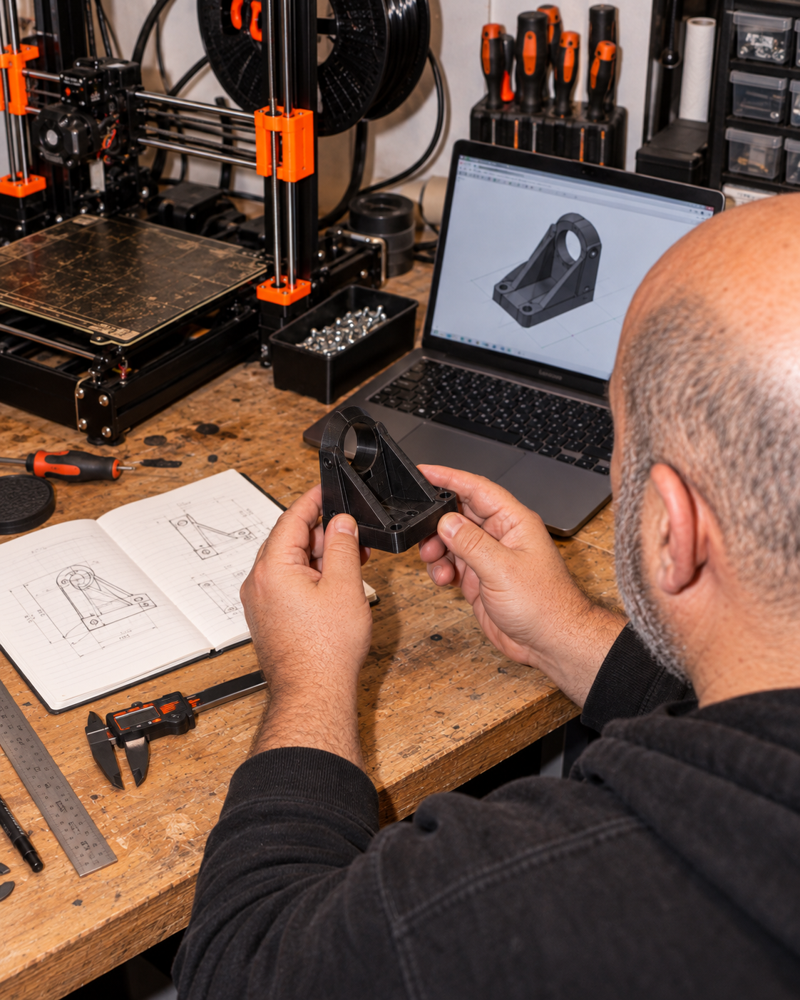
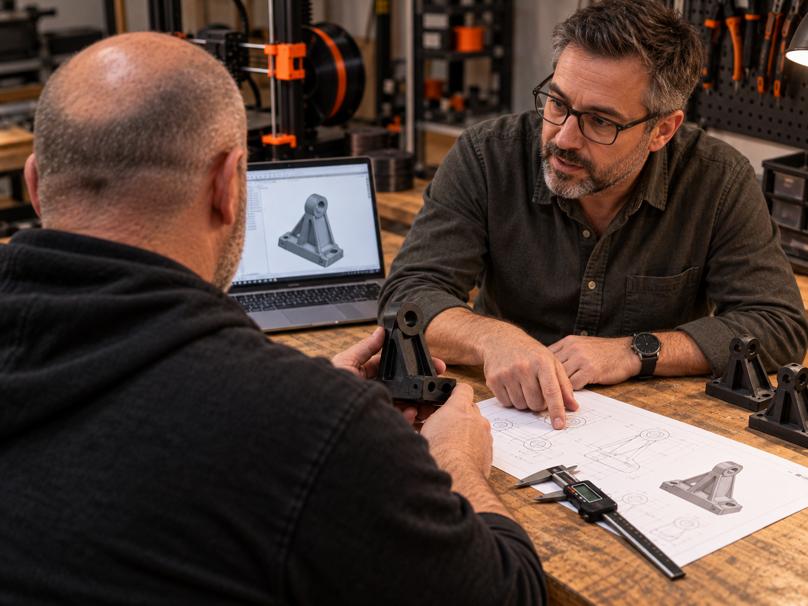

יותר מ־20 שנות ניסיון
בפרויקטים הנדסיים מורכבים.
הניסיון שלנו מאפשר להסתכל על החלק בתוך ההקשר שלו: מה הוא צריך לעשות, לאילו רכיבים הוא מתחבר ובאילו תנאים הוא יעבוד. כך מקבלים החלטות מדויקות יותר בתכנון ובייצור.

Printing Parts 3D מחברת בין שירותי הנדסה לבין ייצור בתלת־ממד. אנחנו מסייעים ללקוחות להפוך צורך לתכנון, לבחור דרך ייצור מתאימה ולהתקדם עד לחלק המוגמר, תוך התייחסות לתפקוד, לזמן ולתקציב.

הניסיון שלנו מאפשר להסתכל על החלק בתוך ההקשר שלו: מה הוא צריך לעשות, לאילו רכיבים הוא מתחבר ובאילו תנאים הוא יעבוד. כך מקבלים החלטות מדויקות יותר בתכנון ובייצור.
אפשר לפנות אלינו עם קובץ מוכן, מודל שדורש התאמה או צורך שעדיין צריך לתכנן. נבחן את המידע, נגדיר את הדרישות ונבנה את הדרך הנכונה עד לחלק המוגמר.
שלחו קובץ, שרטוט, תמונה או תיאור קצר. נבדוק את הנתונים ונחזור עם הצעד הבא.